B ParvoMedics TrueOne 2400
B.1 Specifications
The TrueOne Metabolic Cart by ParvoMedics measures maximal O2 consumption, indirect calorimetry, and other metabolic conditions.
The computer that has the ParvoMedics software installed is not connected to the internet in any way. It has Windows 7. Never connect this computer to the internet or update Windows. This would require attaining approval to install the ParvoMedics software on PrismaHealth computers, which would take several months. The ParvoMedics software is not frequently updated and Windows updates could break the installation. Everything works as it is, and if it ain’t broke, don’t fix it.
After logging in, you need to manually set the date and time to today’s date and time. If you do not manually set the date and time, the data collection software will use the incorrect date and time and will save the data as such, which will make it difficult to locate later.
B.2 Before Data Collection
- At least an hour prior to the time the participant is scheduled to arrive, turn on the metabolic cart by flipping the power switch on the extension cord at the back of the cart.
- Turn on the computer monitor and wait for the screen to load.
- Press
F1. - Enter the password to log in.
- The PARVOMedics software will open automatically. 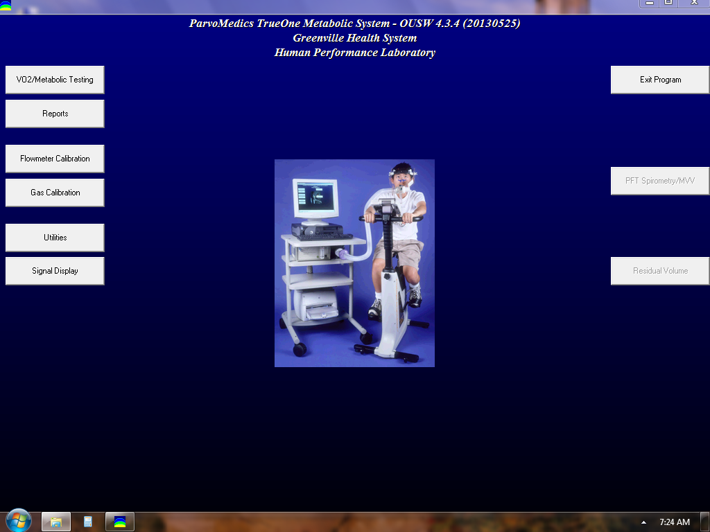
- Set the date and time on the PARVO computer.
- In the bottom right, click on the date and open the date and time settings.
- Click
Change date and time... - Change the date and time to the current day and time. 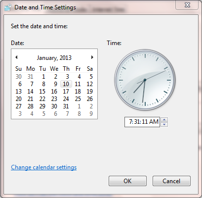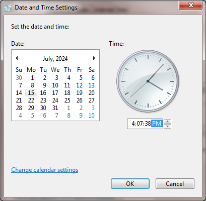
- Click
OKto save and close the panel. 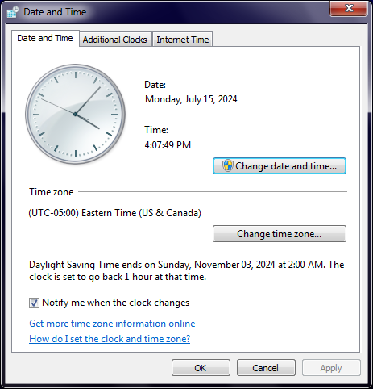 - Check that the date and time are correct.
- Click
OKto save and close the panel.
- Set up the filter and tubing to connect to the gas chamber.
- Get a new purple filter from the box of filters by the window to the right of the TV.
- Pull the filter out of the packaging and throw away the plastic bag and extra gray tube in the package.

- Pull the filter out of the packaging and throw away the plastic bag and extra gray tube in the package.
- Get the following pieces from the baskets on the top of the black cabinet behind the lab door:
- Spit tube
- White connector piece for the spit tube
- Gray rubber adapter

- Screw the spit tube into the white connector piece. If the spit tube refuses to screw in, try the other spit tube. One of them has damaged screw threads and will be difficult.

- Put the short end of the filter into the pneumotach side of the mixing chamber on the second shelf of the PARVO computer cart.


- Put the end of the adapter that has spirals around the inside on the long end of the purple filter sticking out of the pneumotach side of the mixing chamber.

- Connect one end of the white connector piece to the end of the gray rubber adapter that is smooth on the inside.


- Get a long piece of clear tubing from the back of the black cabinet behind the door of the lab.
- Connect one end of the tubing to the white connector piece with the spit tube. Hang the other end of the tubing from the adjustable arm on the PARVO computer cart.

- Get a new purple filter from the box of filters by the window to the right of the TV.
B.2.1 Calibration
In order to conduct calibration, the cart must have been powered on for at least 30 minutes.
Ensure the filter and other pieces are connected to the gas analyzer as shown above.
B.2.1.1 Gas Calibration
- Select
Gas Calibrationfrom the software home screen. - Enter room temperature (Celcius), barometric pressure (mmHg), and room humidity (%) from the Davis Vantage Vue on Sara Biddle’s desk.
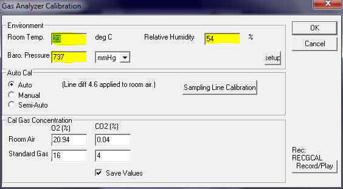

- Click
OK. - When prompted, turn on the sample gas.
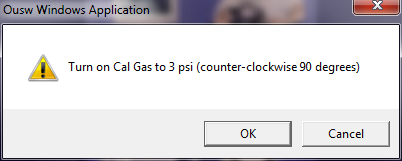
- find the sample gas (gas container on the bottom left of the cart)
- rotate the black handle on top of the gas container counter-clockwise until you cannot turn it anymore. Do not turn the black knob that is taped in place.

- Click
OK.
- The computer will go through several countdown screens. Wait until the prompt to turn off the gas comes up. 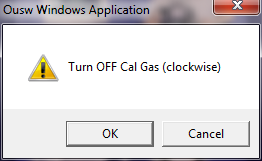
- Rotate the black handle on top of the gas container clockwise as far as you can to the “OFF” position.

- Click ‘OK’ to see calibration results. 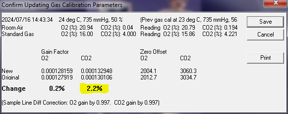
DO NOT SAVE results if the percentage is greater than 1%. This means that this calibration differs from the last calibration by more than we want. If you save the results, since it is a percentage change from the last calibration, the next calibration will have to decrease by greater than 1%.
Example: First calibration attempt results in a percentage of 1.5%. In order to be within 1% of the attempt prior to the first attempt, the second calibration attempt will need to result in a percentage of -0.5%.
To save us from doing this math in between calibration attempts, just do not save attempts greater than 1% difference.
If results are greater than 1%, try the following steps:
- open the lab door
- turn on the fans to blow air around the room
- wait at least 10 minutes and attempt calibration again
When the gas calibration results in less than 1% change from the previous calibration, save results and exit to the home screen.
If you have tried all of the steps above and the gas calibration still results in greater than 1% change from the previous calibration and you are out of time, save the gas calibration results. After the participant leaves, you can try to redo the gas calibration to get back under the 1% change from the previous calibration. There are several reasons that the calibration will still result in a difference greater than 1%, such as the weather, issues with the air conditioning, and more. The only things we can do to prevent issues with the calibration is limit the number of people in the lab. Have extra people stand out in the hallway or try to schedule fewer people to come in to the lab.
B.2.1.2 Flowmeter Calibration
The flowmeter calibration consists of three phases.
The first phase is the Detection phase. This is one flush of the syringe for the software to ensure that the flushes are detected at all.
The second phase is the Flushes phase. This is four flushes of the calibration syringe. These can be practice flushes for the calibration flushes. The speed of the flushes does not matter and these flushes are not saved as part of the calibration.
The third phase is the Strokes phase. This is five flushes of the calibration syringe. The flushes must each be a certain speed. It is generally easiest to start with the slower speeds and increase with each flush. At the end of a flush, a line of white dots will come across the screen at the maximum value of the flush. When you successfully match the flush speed, the blue bar corresponding to that flush speed will disappear.
\TODO finish flowmeter calibration description of steps and flushes.
- Connect tubing to the calibration syringe.
- The purple filter and the spit tube should already be placed on the end of the gas mixing chamber on the second shelf of the PARVO computer cart.
- Connect one end of the tubing on the end of the spit tube adapter piece.
- Get the calibration syringe from the third shelf of the PARVO computer cart and put it on the top of the desk for easier use.
- Get the syringe adapter from the third shelf of the PARVO computer cart. This piece will resemble parts of the mask that we prepare for participant’s to wear. It is slightly different, as instead of the semi-transparent circle piece that the blue rubber mask is connected to, there is a white circle piece.
- Connect the clear end of the syringe mask adapter to the other end of the tubing.

- Connect the white end of the syringe mask adapter to the rubber on the end of the syringe.

- Select ‘Flowmeter Calibration’ from the software home page.
- Check the atmospheric variables.
- If the gas calibration was completed prior to the flowmeter calibration, the atmospheric variables should be the same as what you entered for the gas calibration. If the gas calibration was not completed prior to the flowmeter calibration, go back and do the gas calibration first.
- Check the room temperature (Celcius),room humidity (%), and barometric pressure (mmHg) inputs match the Davis Vantage Vue on Sara Biddle’s desk.
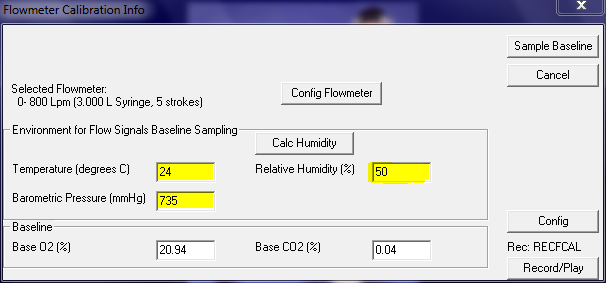
- If the atmospheric variables match the vantage vue, click
Sample Baseline.
- The Flowmeter Calibration will start.
- Detection Phase
- Flushes Phase 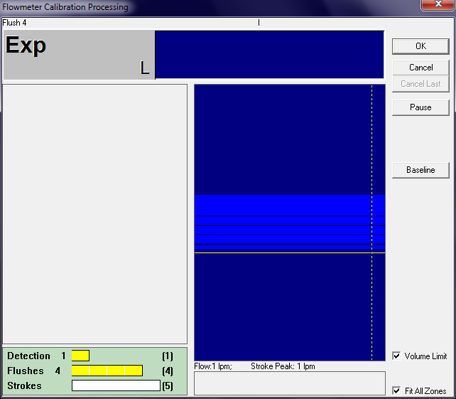
- Strokes Phase
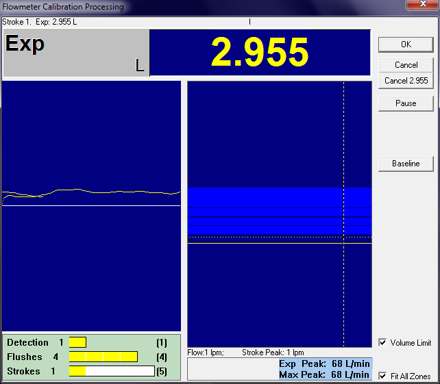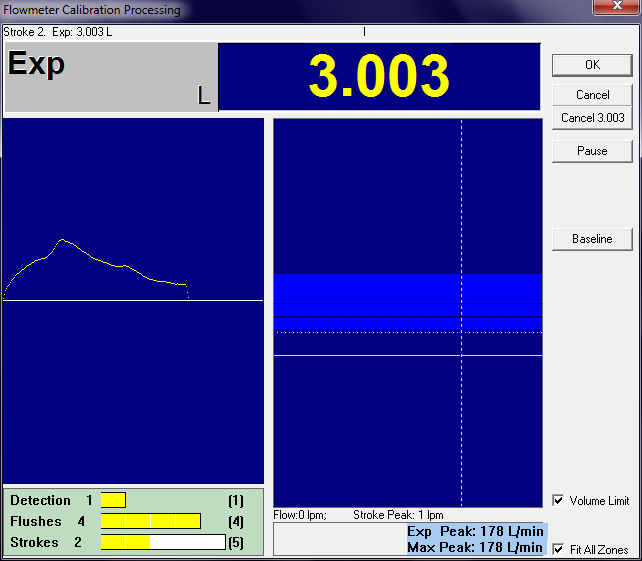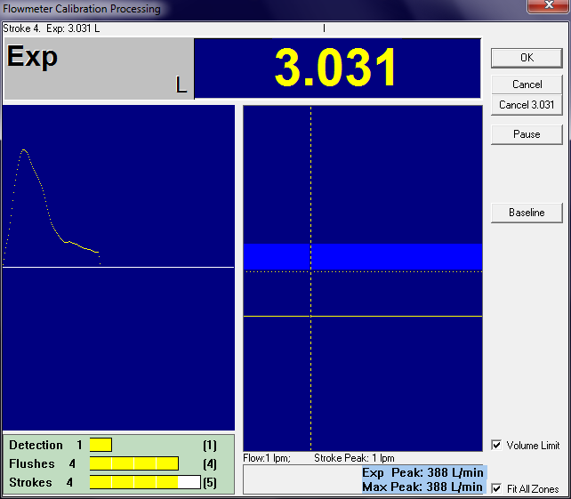 - After the fifth successful stroke, the software will immediately display the calibration results. 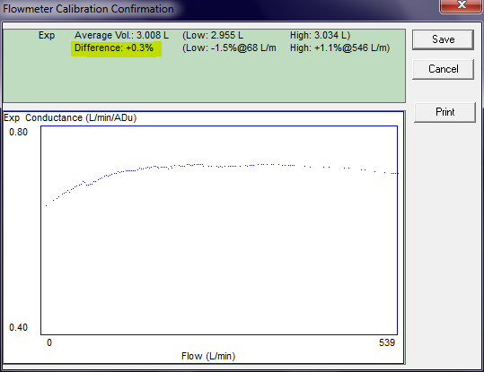
- Check that the percent difference is less than 1%. If the absolute value of the percent difference is less than 1, click
Save. If the absolute value of the percent difference is greater than one, clickCanceland try the flowmeter calibration again a few minutes later.
B.2.2 Mask Sizing
- Find the mask size guide in the caddy that sits on the wheeled cart that sits next to the ultrasound.
- Hold the mask size guide up to the face of the patient. Hold the top of the guide at the bridge of the nose.
- Look at the bottom of the guide and see where the chin sits. Choose the appropriate size. If the chin rests between two sizes, try the smaller size first.
B.2.3 Mask Assembly
Pink buckets and mask parts are sterile and should NOT be touched without gloves. There are several boxes of latex gloves in different sizes in the lab. Pick whichever size fits you before touching ANY parts.
- Grab a pink bucket and ensure the following components are in the bucket:
- Clear plastic with two black circles
- Clear plastic with triangle
- White plastic that narrows
- Semi-transparent circle made of hard plastic
- Two hard plastic white circles
- Two silicone caps
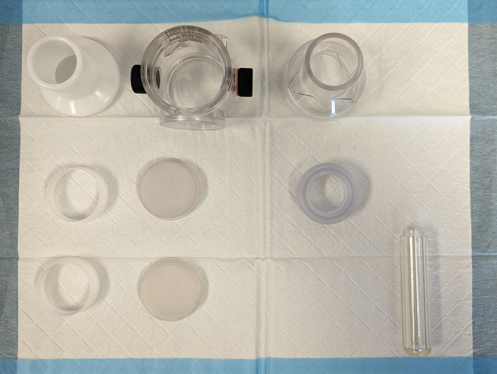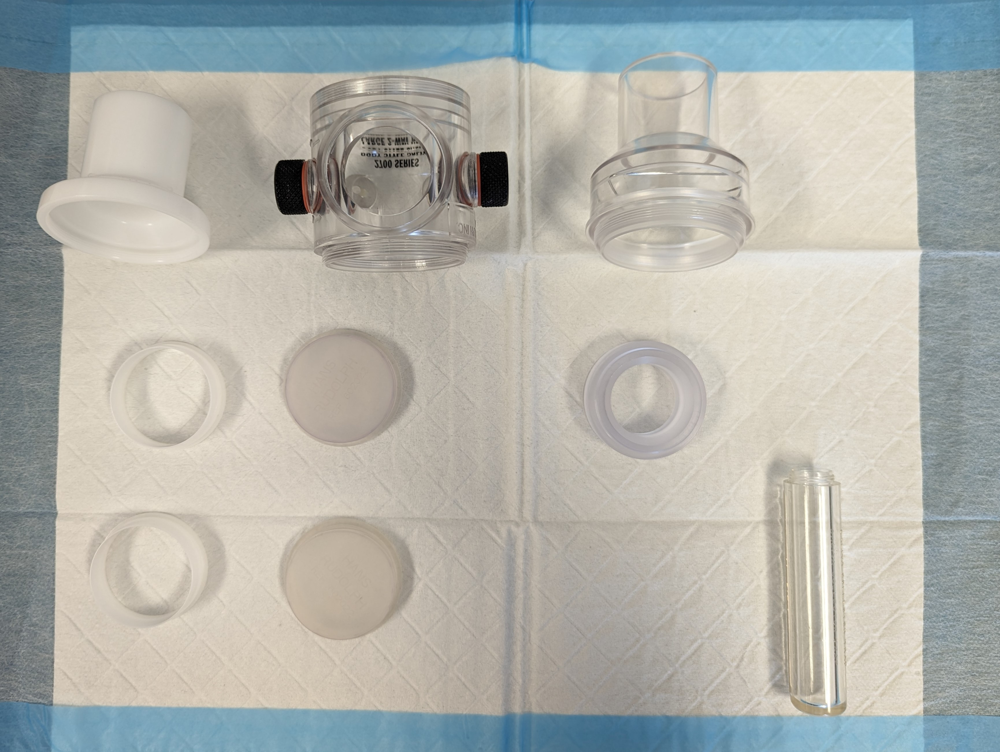
- Take a silicone cap and place on a hard plastic white circle
- The silicone cap and the hard plastic white circle should face the same direction (the outer rims should be on the same side)
- Carefully pull the outer rim of the silicone cap over the lip of the hard white plastic circle. Be careful not to tear the silicone, handle these pieces very gently!
- Rotate the hard white plastic circle to make sure that the outer rim of the silicone cap is pulled over the lip all the way around.
- You should be able to gently push through the middle of the hard white plastic circle and stretch the top of the silicone cap out from the edge of the hard white plastic circle while the outer rim of the silicone cap stays in place over the lip of the hard white plastic circle.
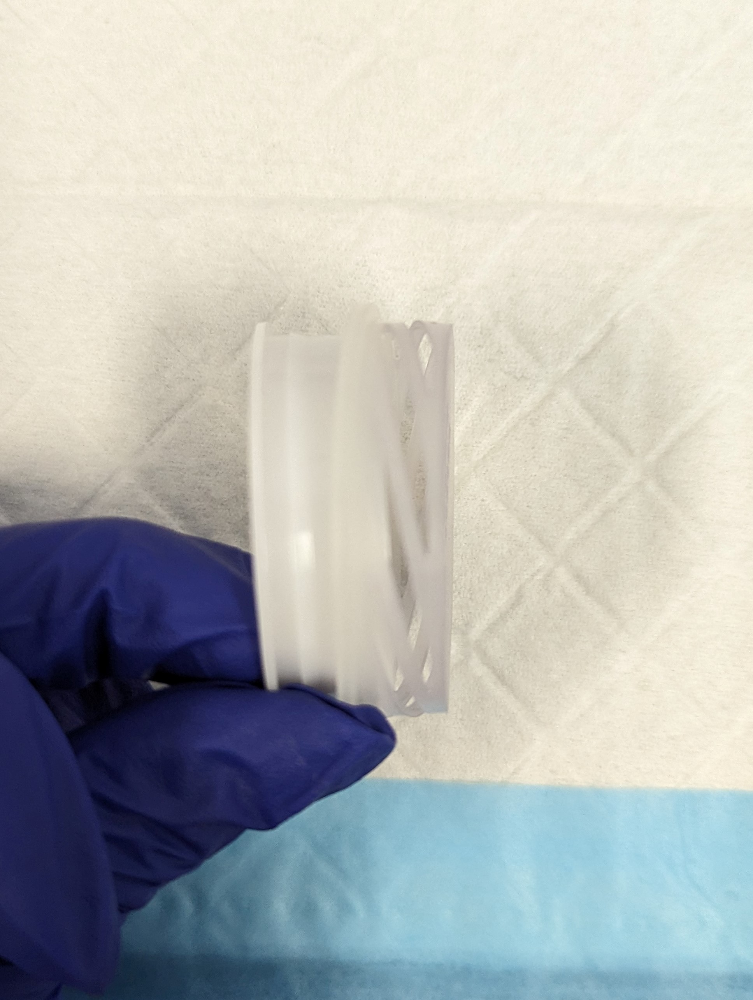 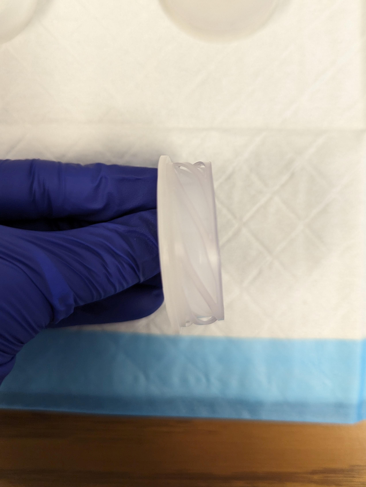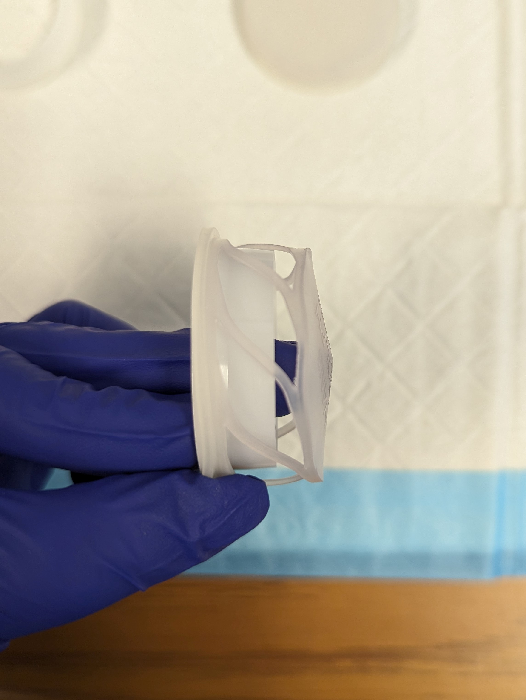
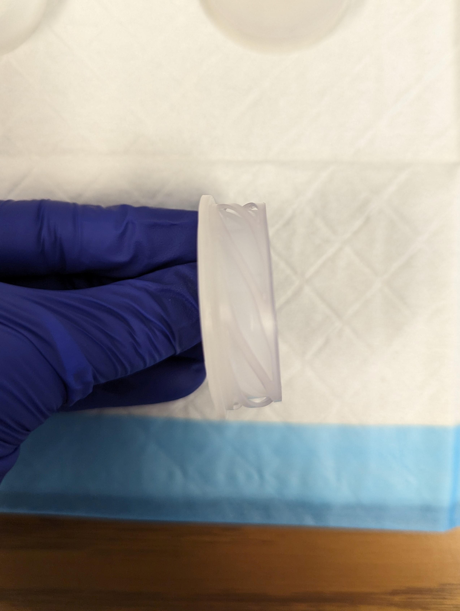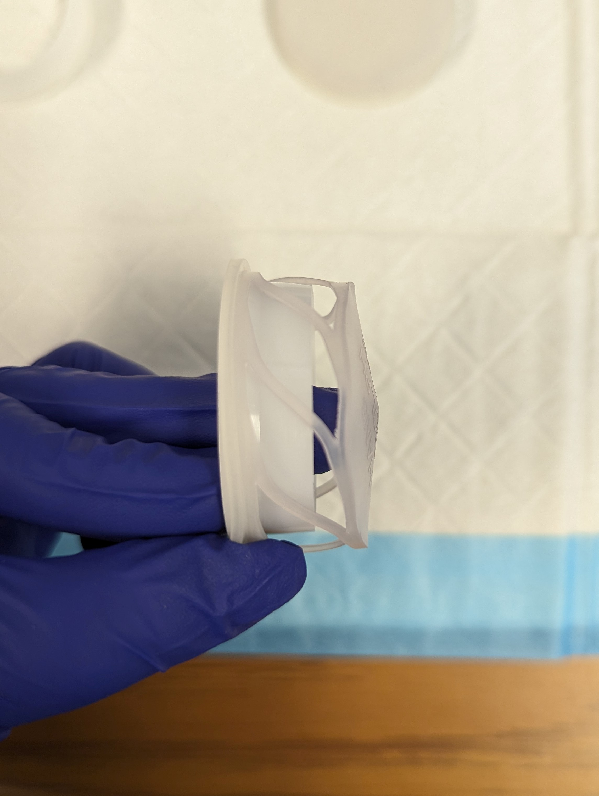
- Repeat with the other silicone cap and hard plastic white circle. There should be two pairs of silicone cap and hard plastic white circle.
- Take one of the pairs of silicone cap and hard plastic white circle and the clear tapered hard plastic piece.
- Place the silicone cap into the larger end of the clear tapered piece. The outer rim of the silicone cap should sit flush with the rim of the clear tapered piece. The silicone should face the inside of the clear tapered piece.


- Take the middle piece of the mask (the clear cylindrical piece with three openings and two black cylinders on it) and rotate it around until you can see the arrows etched into it.
- The arrows etched into the piece show the direction of air flow through the pieces. The air comes “in” from one opening, into and out of the mask where someone is breathing in and out of one opening, and “out” of one opening into the tubing and finally into the gas analyzer. The silicone pieces allow air to flow in only one direction so that all air the person breathes out is sent into the gas analyzer.
- Find the arrow pointing “out” of the cylinder and rotate it so that the arrow pointing “out” points to your right.
- Take the clear tapered piece with the silicone vent inside it and screw it onto the opening facing the right


- Take the second silicone vent and place it in the left opening of the middle piece. This opening should be directly opposite the opening facing to the right of the middle piece, that now has the clear tapered piece screwed on.
- The silicone vent should have the outer rim flush with the outer rim of the opening, and the silicone should face into the middle piece.


- Take the white tapered plastic piece and screw on to the opening over the silicone vent.

- Take the semi-transparent hard plastic circle and screw onto the remaining opening of the middle piece.
 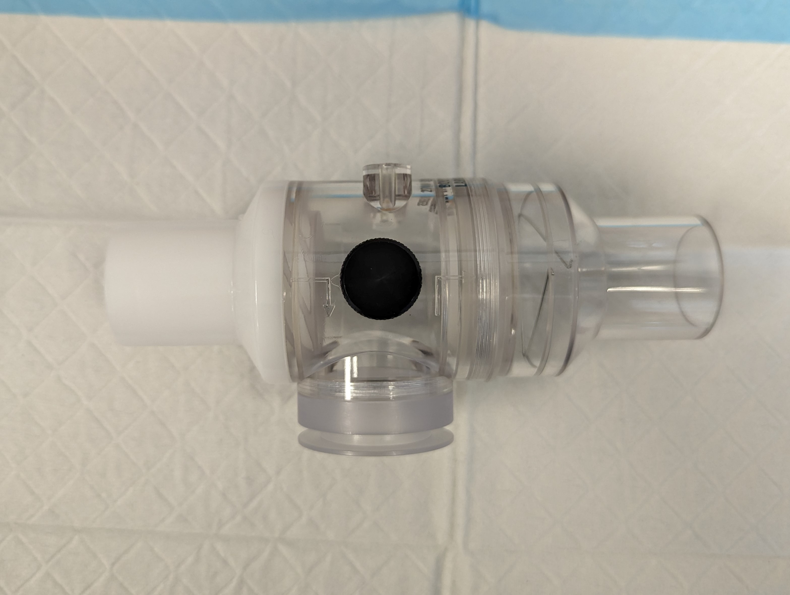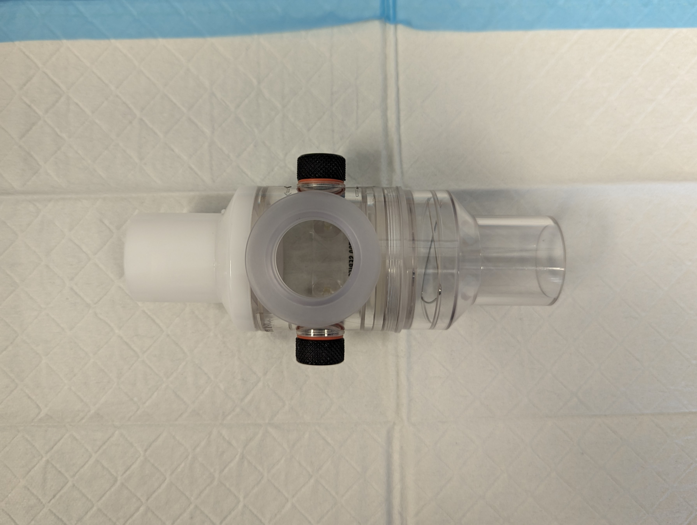
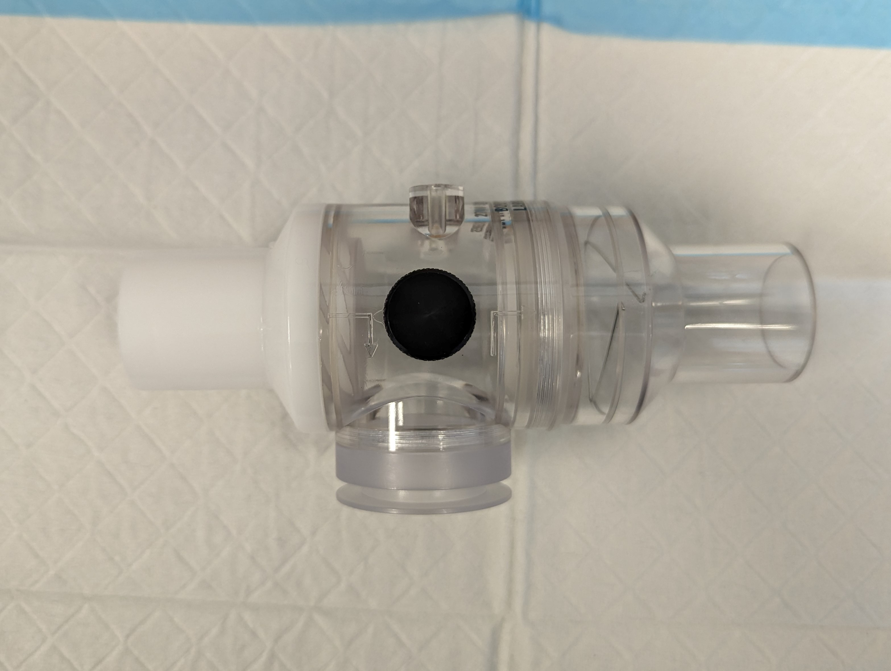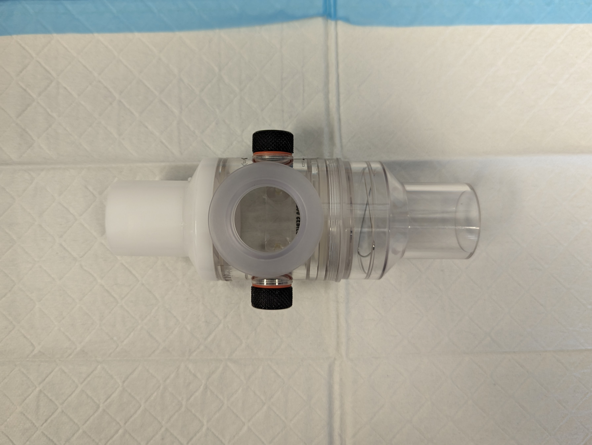
- Select the blue rubber mask of the appropriate size.
- The size is etched on the “chin” of the mask.
- See B.2.2 for choosing the correct size.

- Orient the blue mask as if you were going to wear it on your face. The “nose” should be upward with the “chin” downward and the hard clear plastic pieces should face outward. You should only see blue rubber.
- Orient the assembled pieces so that the air flows in the appropriate direction.
- The “out” arrow direction with the clear tapered end should point towards the station with the gas analyzer, i.e. if the gas analyzer will be on the left then the clear tapered end should point to the left, and if the gas analyzer will be on the right then the clear tapered end should point to the right. In the HPL, the stationary exercise bike will always have the gas analyzer on the left, therefore have the clear tapered end point to the left.
- The third opening with the semi-transparent circular piece should face the “mouth” of the blue rubber mask.
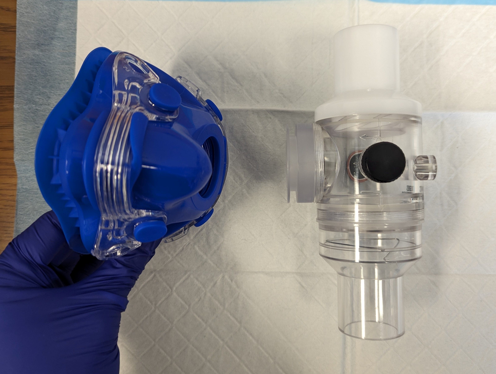
- Stretch the opening of the blue rubber mask over the semi-transparent circle opening of the assembled pieces.
- This is difficult and you will have to manhandle the blue rubber mask a bit. It does not stretch super well.
- Look through the mask and make sure that there is a good seal around the opening. If there is not a good seal, the blue rubber will not make a perfect circle around the opening.
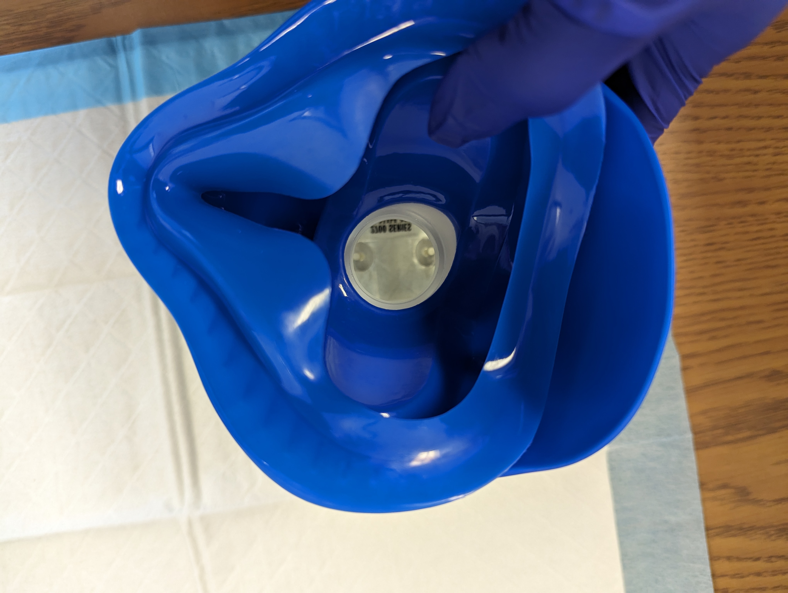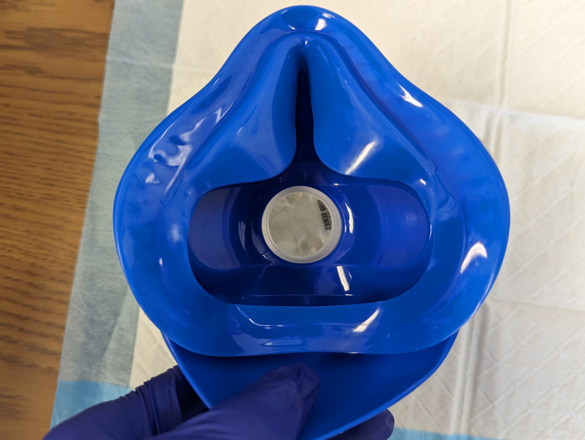
B.2.4 Heart Rate Monitor
All men leave the room (except family the patient may or may not have brought with them to the lab). Spray water on the part of the monitor that will be in contact with the skin. Have the patient hold the center ‘button’ on the strap to their sternum. Clip the ends of the strap together. Tighten the strap to be snug around the patient’s chest. Push the strap up under the patient’s bra strap and make sure the monitor is in contact with the skin all the way across the chest.
Use the watch to check that the monitor is sending a good signal. Press the middle button to the left of the watch face and wait to see the watch display a heart rate. If the heart rate does not display or shows a number that seems off, try to adjust the monitor to get a better connection. Try to push the monitor up higher on the sternum. This can be difficult on some patients depending on breast tissue, so do your best. Check the signal again.
If the watch is having issues connecting with the heart rate monitor, you can check from the Parvo software. add steps here
B.3 Data Collection
- Select
VO2/Metabolic Testing. 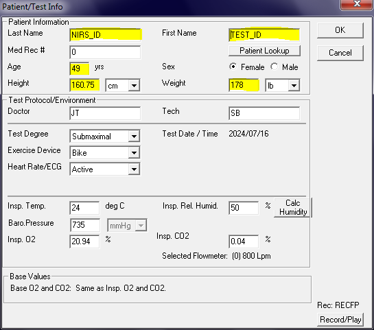- Enter the patient’s study ID number as the last name.
- Enter the testing ID as the first name. The testing ID for lactate thresholds is “LT”. The testing ID for On/Off Kinetics is “FP_CYCLE#”. Enter the following as BOTH the first and last name:
- Enter the participant’s height, weight, and age.
- Check that the atmospheric variables match the Vantage Vue on the desk.
- Check that the selected value under Test Degree is Submaximal, that Excercise Device is Bike, and Heart Rate/ECG is Active.
- Click
OK.
- Select the testing protocol.
- Lactate Threshold Test
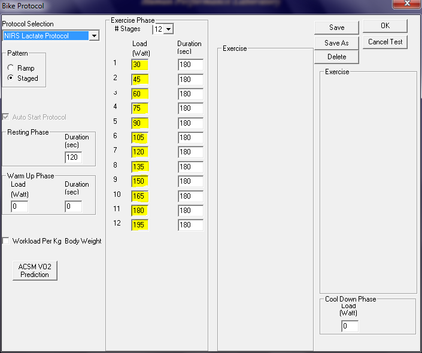
- Under Protocol Selection, make sure NIRS Lactate Protocol is selected.
- Input appropriate wattage jumps as decided by the study staff.
- On/Off Kinetics Test
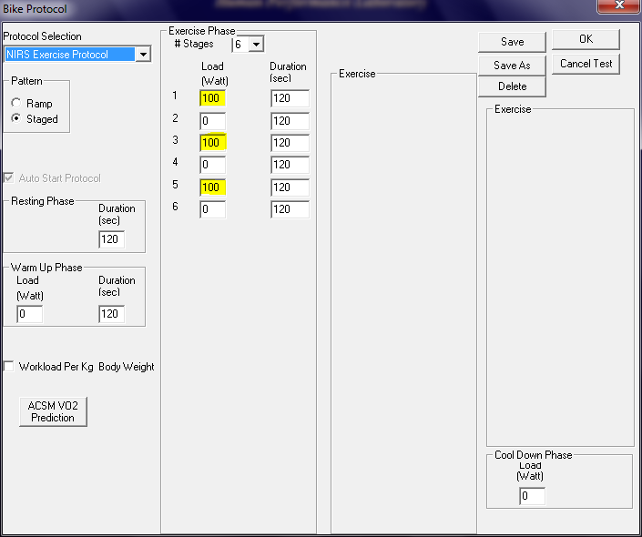
- Under Protocol Selection, make sure that NIRS Exercise Protocol is selected.
- Input the appropriate wattage for work stages, as determined after lactate threshold testing.
- Click
OKand wait for the software to start the test.
- Lactate Threshold Test
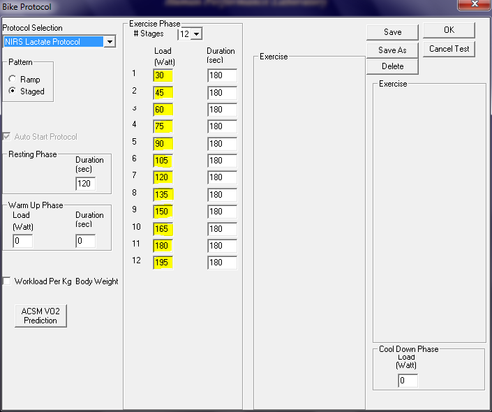
When testing is complete, click ‘end test’.
Save results and print a copy of the report.
Check that the report will be printed with 10-second averages. Click ‘config’ in the bottom left and ensure that the data averaging selected is 10 seconds. Click ‘OK’ and print. The report will be printed on the printer on the bottom shelf of the cart.
B.4 After Data Collection
B.4.1 Data Export
The ParvoMedics software can export the data as Excel files or XML. The Excel files it creates use an old version of Excel, the 97-2003 version. If you try to open this file on an up to date computer, your computer will think you are trying to kill it with a virus. To open the Excel files, you will need to re-save it as an updated Excel file.
The XML files do not need to be opened and re-saved as up-to-date files, however they are more difficult to work with than Excel files.
Export each dataset as both XML and Excel. That way, the person doing data analysis can choose the file format they prefer without having to go back and export all the files again.
Save exported files to a USB drive. The PARVO computer is not connected to the internet so the files cannot be directly uploaded to RedCap and must first be transferred to a computer with an internet connection.
Make sure to use the Windows prompt to safely eject the USB drive. Many newer computers have some sort of auto setting to safely eject hardware, but this computer is old and has not been updated in some time. Always eject safely to protect the computer and the data on the hard drive.
- From the home screen, select
Reports. 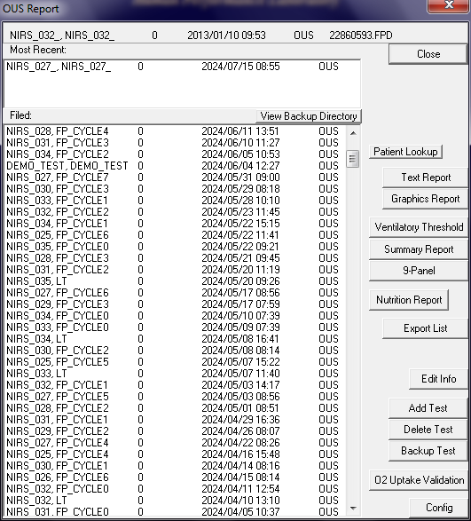 - Select the measurement you want to export.
- Click
Text Report. 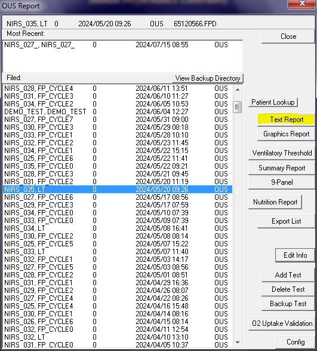 - Check that the text report header has the correct information for the patient.
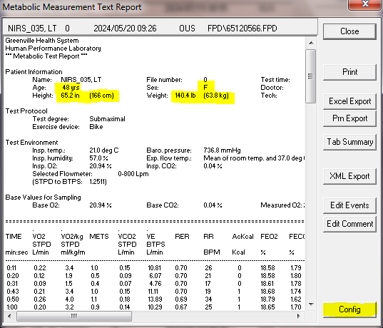
- If the information is correct, proceed to step 5.
- If the information is incorrect, proceed through the next steps.
- Close the text report.
- Click
Edit Info. - Change the information that needs to be corrected.
- Save the changes.
- Click
Config. 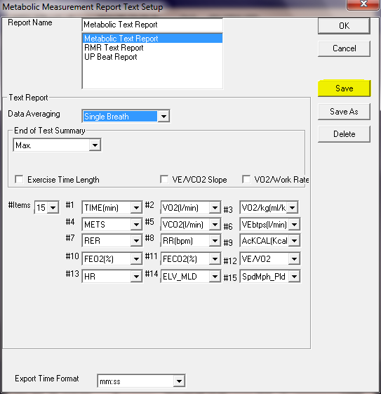 - By Data Averaging, select Single Breath from the drop down.
- Click
OK. 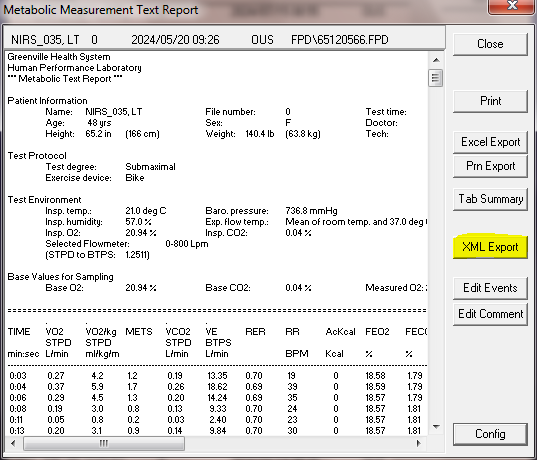- If the single breath averaging was applied correctly, the
TIMEcolumn in the data will show one row for each breath. The time between breaths will vary, but will generally be less than five seconds.
- If the single breath averaging was applied correctly, the
- Click
XML Export. 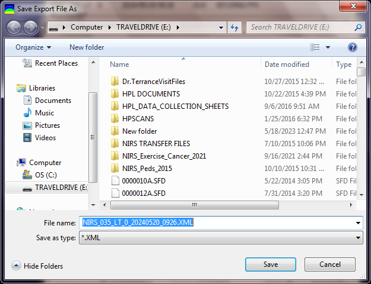 - The software automatically chooses a name for the file using the first and last name and the date of the testing. Re-name it to something easier to read using the usual pattern.
- Select an appropriate location to save the file. Normally in a USB drive. 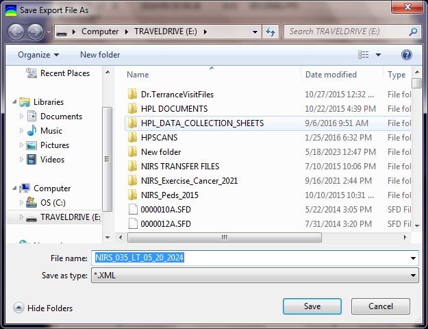
- Click
Save. - Close open panels.
- Safely eject the USB drive.
- Click on the icon in the bottom right of the screen.
- Click
safely eject hardware. - When it is safe, pull out the USB drive.
B.4.2 Cleaning Equipment
Put on a pair of gloves.
Everything that has touched the patient’s skin will need to be cleaned. Place everything that needs to be cleaned into a pink bucket. This includes the mask, the mask straps, the clear tubing, the spit catcher, and the heart rate monitor strap.
Take apart the mask into its individual pieces. Take the button off the heart rate monitor strap and wipe the button down with an alcohol wipe.
On the blue cart in the corner behind the door, there is a white bucket with a lid. Take this cart with the pink bucket. When you walk through the hallways of the hospital, you can NOT wear gloves. Take off your gloves and put a clean pair in a pocket to bring with you just in case. Take the cart with the pink bucket of dirty equipment and walk to the service room. In the service room, take the pieces of the mask, disassembled, and the mask strap and the heart rate monitor strap and place them all in the blue liquid in the white bucket. Ensure the blue liquid covers all the pieces. Start a timer for 12 minutes. Leave everything soaking for 12 minutes. Make sure to put the lid on the bucket while it soaks, as the blue liquid is light sensitive.
While everything is soaking, pump soap and water into the clear tubing. Swish the soapy water around the tubing, making sure to get every part of the tubing. Do this over the sink or you will spill water out of the ends of the tubing. Rinse the tubing out and get out all of the soapy water. Use soap and water to clean out the bottom of the pink bucket. It had dirty equipment in it and it needs to be cleaned before you put clean equipment back in it.
At the end of the 12 minutes, pull all the parts out of the blue liquid and rinse them off in the sink. Put them in the pink bucket. Close the bucket of blue liquid. Walk the blue cart back to the lab. Take all the equipment and set it out to dry behind the door.